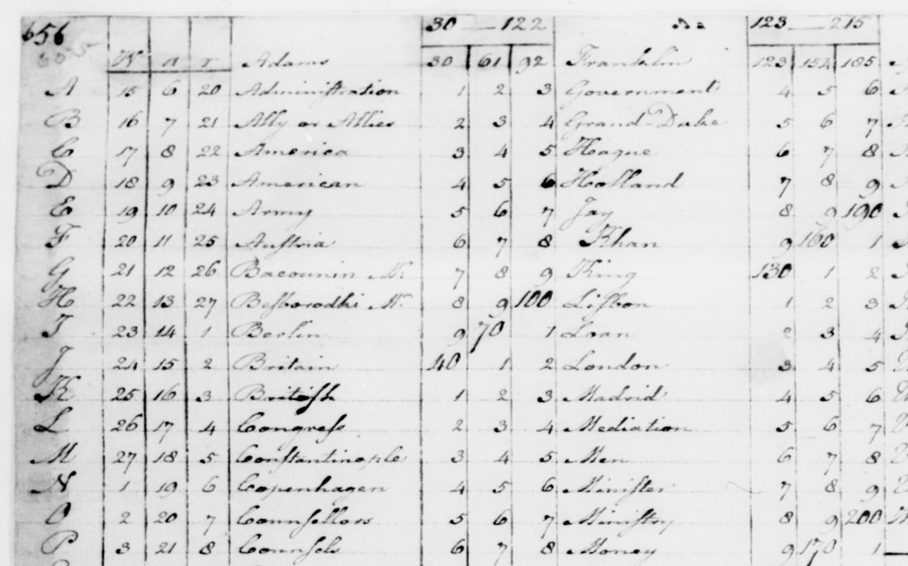

At a glanceCiphertext-only break · partial (99.5% of cipher tokens valued, not the word count)
- The letter
- Francis Dana to Robert R. Livingston, Secretary for Foreign Affairs, St Petersburg, 6 April 1783 Old Style (17 April New Style): despatch No. 23, the triplicate. The clear text ends “All may yet end as we wish, it may end otherwise”; then come eight lines of numbers.
- Where
- National Archives (NARA), RG 360, Papers of the Continental Congress, item 89 vol. 2, pp. 727–730 (microfilm M247); the cipher is on p. 730. It was catalogue entry 485 here. It is not on DECODE.
- The cipher
- Dana’s own. Three alphabets of 27 signs (a to z and &) are used in turn, so a letter is a number from 1 to 27. A number above 27 is a word from a list of 78, and after it the key word starts again. The passage has 215 numbers.
- How it was deciphered
- WAINUT’s AI agents recovered the three alphabets from the eight lines alone. Brice Dudout, who broke them independently the same day, then found Dana’s own table in the same volume: it has the same alphabets and gives the three word numbers.
- What it says
- “In an Administration like this, which is not guided by any settled principles or system, you can be certain of no measure.” What is adopted in one hour may be opposed in the next, and “properly speaking, there is no Minister here”.
- Still open
- One number, 29, is not in Dana’s table: the I of “In” comes from the sentence. Four more words carry an enciphering error of Dana’s and are corrected by sense. That leaves 47 of 52 words sure.
- Credit
- The break and the decipherment were contributed by WAINUT (27 Oct 2026). Brice Dudout found Dana’s table and made the parallel reading. Andrew Beling found the clerk’s copies of the table and of the despatch (issue 898). WAINUT and Andrew Beling worked with AI agents.
01 The despatch
Dana was at St Petersburg as the minister Congress had named to the Russian court. He had told the vice-chancellor of his mission on 7 March 1783 and had no answer. Despatch No. 23 runs from p. 727 to p. 730 of the volume; its heading is “St Petersbourg April 6th 1783. O.S.” and its docket “(Tript. No. 23)”, so this is the third copy he sent. It asks Congress to “suspend their judgment upon this matter” and ends: “All may yet end as we wish, it may end otherwise.” The numbers follow on the same line.
A postscript in clear says which cipher it is: “I make use of the Cypher I sent you by Mr. Adams’s Son, having laid yours aside for the reason there mentioned.” On 23 September 1782 Dana had written that Livingston’s cipher was “intolerably tedious and so liable to errors”, and that he would prepare another scheme and send it to Holland by John Quincy Adams, then his secretary.
Wharton printed the despatch in 1889 with the words “(Here follow eight lines of cipher.)” and no decipherment. One reading of his differs from the scan: the postscript on p. 730 has “Your printed one has come to hand with your letter”, and Wharton prints “has not come to hand”. No “not” is visible on the scan.
A clerk’s copy of the despatch is in another volume, item 109 of the same papers (transcript p. 202). It gives the passage in eleven lines and has all 215 numbers. The 208 numbers that are whole on the triplicate are the same there, in the same order; the four cut numbers are 11, 15, 27 and 26; and 20, 11 and 1 stand at three line ends where the triplicate lacks a number (at the end of line 5 a partial stroke shows). The reading below takes those seven numbers from the clerk’s copy. Which copy of the despatch the clerk had is not known.
02 Dana’s cipher
The cipher is a numbered table of the kind James Lovell used. The alphabet has 27 signs, a to z and &. There are three such alphabets, each starting from a different letter, and they are used in turn, one for each letter of the text. In the first, n is 1 and i is 23; in the second, w is 1; in the third, i is 1. A solver who knows nothing else names such a key by the letters numbered 1, here N, W and I; the contributor’s files write it WIN.
Dana’s own sheet is in the same volume, at p. 656, with his despatch of 14 October 1782. Its three columns are headed W, a, r: his key word was War. They hold the same three alphabets (a is 15, 6 and 20; n is 1, 19 and 6). Beside them is a list of 78 words and names with three numbers each, from 30 to 263: Adams 30, 61, 92; Administration 31, 62, 93; and so on to Warontzow 231, 247, 263. The numbers 264 to 305 are left blank for words Livingston might add. It has names (Bacounin, Besborodki, Franklin, Jay, Osterman, Panin, Potemkin, Vergennes), courts and countries, and words such as Congress, Credit, Fishery, Loan, Mediation and Treaty.

The rules are written on the sheet. One of them, as the clerk’s copy has it: “When you come to an arbitrary character, begin your Key word anew. # Or to a Cypher above 27”. So after a word number the next letter is again in the first column. The sheet has its own example, “When the Army of America go” as 10. 13. 24. 1. 25. 27. 19. 35. 2. 11. 33. 21. 20. Dana also says why he made it: he sends it “only because I have probable grounds to suppose yours is in the hands of the Ministry here”.
The sheet was transcribed here by an AI model, at full size, and laid beside the clerk’s copy of it in item 109 (transcript pp. 102–103). The whole word list is in the key file. An earlier key sheet of Dana’s, headed “No. 1”, is in item 59 of the same papers. It is a different scheme, with 25 signs and a word list numbered 26 to 52, and it does not fit this passage. The copy of the 1782 cipher that Dana sent to John Adams is numbered differently, by the values the Adams Papers editors give for three word numbers; that sheet was not seen here.
03 How the key was found
WAINUT’s AI agents transcribed the eight lines from the scan, twice and independently. All the numbers run from 1 to 27 except four, which pointed to a table of 27 signs. An index of coincidence over periods pointed to period 3, but weakly. What found the key was a ranking of all 19,683 keys of period 3 by a letter-pair score of English: on the raw numbers, with nothing corrected, the true key came second, and the first differed from it in one letter. The shifts gave the three alphabets, and long runs of English followed at each.
The controls from the contributor’s script: the decryption scores −2.739 per letter pair; the best of 200 wrong keys with the same alignment scores −4.431; the best of 200 shuffles of the numbers under the true key scores −4.874. The project’s own validation of a recovered key gives −1.921 per letter over 204 numbers, against −6.754 for random keys and a best of −2.808 for a key fitted to shuffled ciphertext. Verdict: pass.
Brice Dudout broke the same three alphabets the same day, without knowing of this work, from letter frequencies and English 4-gram statistics. He then leafed through the volume and found Dana’s sheet at p. 656. Its columns are the three alphabets of both breaks. The sheet was found after the break, so the method stays ciphertext-only for the alphabets; the three word numbers 31, 137 and 168 are not from the ciphertext but from Dana’s list. On the sheet a word’s numbers follow the word: the example has Army 35 and America 33, which is Adams 30 plus 5 and plus 3.
The key replay applies the key file to the 215 numbers of the clerk’s copy and compares the result with the reading. 48 of the 52 words are the key’s own output, 4 differ and are marked, and none differs without a mark. The replay has two key-column events written into it, both named in section 05. Without the first (29 taken in a letter’s place, in the first column), the three letters after 29 come out e, o, i instead of n, a, n; without the second (the column passed over after the b of irresistab), nothing decodes from there to the next word number.
04 The reading
The plaintext is English. Word division and punctuation are supplied; Dana’s spelling is kept. A letter in square brackets is not what the key gives for the number as written, and its word counts as a hole. The words in italics are word numbers from Dana’s list.
[I]n an Administration like this, which [i]s not guided by an[y] settled principles or system, you can be certain of no measure. What the Minister adopt in this hour may be opposed by an irresistab[le] influ[e]nce in the next. In short, properly speaking, there is no Minister here. Hence my present difficulty.
Dana is explaining why he cannot say how his mission will end. Nothing at the Russian court is settled by principle, and what one party adopts may be overturned by another influence the next hour. Dana’s list has Minister and Ministry and no plural, so “the Minister adopt” may be his way of writing Ministers; that is not decided here.
The reading was graded A (coherent sentences with scattered holes) on 24 Nov 2026 by an AI agent working for the maintainers, who was not the author of the reading. It is a model’s grade. No person has checked the reading or the images.
05 Dana’s own errors
The triplicate and the clerk’s copy agree on every number the triplicate shows, so what follows is in the cipher as Dana wrote it. Each place was looked at on the scan, enlarged.
- 29, the first number. It is not in the table: the alphabets stop at 27 and the list starts at 30. On the scan its second figure has the tail of a 9, like the 19 beside it. By Dana’s rule a number above 27 starts the key word again, and the three numbers after it would then give e, o, i. They give n, a, n only if 29 stands in a letter’s place and uses the first column. In that column i is 23, one figure away. So the I of “In” is taken from the sentence, and 29 has no value.
- Three letters in the wrong column. In line 1 a 23 gives r where “is” wants i; in line 2 a 12 gives g where “any” wants y; in line 6 a 24 gives s where “influence” wants e. Each number is the right letter in a neighbouring column.
- One column passed over. After the b of “irresistab” the key jumps one column. No number is missing there: 7 is followed directly by 26 on both copies. With the jump the next letters are l, e; without it they are g, w, and nothing after them decodes until the next word number.
The editors of the Adams Papers met the same thing in Dana’s letter to John Adams of 6 June 1783: they take one of its word numbers for an inadvertence, which his letter-book repeats.
06 What remains open
- Five words of 52 are holes by the rule used on this site, where a word with a corrected or supplied letter does not count: In, is, any, irresistable, influence. That is 47 of 52 (0.904), under the 95% needed for a full reading, and a text of 52 words is too long for the short-text allowance. The sense of the five is not in doubt (grade I, inferred from context).
- If the seven numbers from the clerk’s copy were counted as supplied, five more words would be holes (or, measure, may, properly, hence): 42 of 52. The class would be the same.
- What could close them. Dana kept letter-books. The Massachusetts Historical Society holds his official letter-books for 1781–1784 in the Dana Family Papers (vols. 24–25; also on its microfilm); they are not online. His file copy of No. 23 should be there. Whether it has the passage in words or in numbers is not known. The first and second copies of the despatch are not beside the triplicate in the volume and were not found.
- No second text in this cipher was found. Of the 28 letters of Dana to Livingston that Wharton prints from 14 October 1782 to 17 August 1783, only No. 23 is marked as carrying cipher. Wharton prints some of them with omissions, and the manuscripts of the others were not paged through.
- Every transcription here is a model’s: the triplicate, the clerk’s copy and Dana’s sheet. The word list was transcribed once from the sheet. No person has compared any of them with the images.
07 Earlier work
No earlier decipherment was found; the search was not exhaustive. Wharton (1889) prints the passage as cipher. His footnote “The key to Mr. Dana’s cipher is missing” belongs to another letter, Dana to John Adams of 1 June 1783, and to two word numbers in it. The editors of the Madison Papers note that of Dana’s three despatches of 6, 11 and 14 April only eight lines of the first are in cipher, and that Wharton does not decode them; Madison himself wrote on 11 August 1783 that the passages in cipher were not yet translated. The Adams Papers reproduce the copy of the cipher that Dana sent to John Adams and decode word numbers in two letters to Adams with it; they do not treat No. 23. The clerk’s transcript in item 109 gives the numbers, not a decipherment.
Brice Dudout’s reading, published on his own site on 27 Oct 2026, is the same text. Not checked: Giunta’s The Emerging Nation, Weber’s United States Diplomatic Codes and Ciphers (1979), which the Adams Papers cite for this cipher, and Dana’s letter-books.
Full texts
The transcription and the decryption of every document on this page, so that the reading can be used and checked. Short files are shown here; all are in the repository.
No. 23, St Petersburg, 6 Apr 1783 (O.S.), PCC 89 vol. 2 p. 730 read in part
Dana, waiting in vain for the Russian court to receive him, explains why he cannot predict the outcome: in an Administration not guided by settled principles or system nothing can be counted on, what the Minister adopt in this hour may be opposed by another influence in the next, and properly speaking there is no Minister here. One group (29) is open.
Builds coherent sentences, but under the read bar of 95% of words read as sense (90% here); the holes are marked in the reading.
Transcription
# Francis Dana to Robert R. Livingston, St Petersburg, 6 Apr 1783 (O.S.) = 17 Apr 1783 (N.S.), letter No. 23 (triplicate) # NARA RG 360, Papers of the Continental Congress, item 89 vol. 2 (M247), naId 502963402, digital object 315 of 387 # = MS p. 730: https://catalog.archives.gov/medialz/partners/dc-metro/rg-360/M247/pcc_404461_0001/407507.jp2 # The cipher follows "All may yet end as we wish, it may end otherwise. ----". # Eight lines, read twice from the scan, independently. Groups are separated by dots in the MS. # n| = token cut by the right edge of the microfilm frame; only the first digit n is visible. # Not transcribed: an ink blot in line 3 between "2." and "11." (not a number). Line 5 ends "1. 1." and a third # "1" stroke stands at the edge. Lines 2, 7 and 8 end with no visible cut. 29. 19. 20. 1. 31. 26. 14. 3. 19. 25. 27. 23. 24. 15. 22. 14. 22. 22. 23. 1| 1. 20. 12. 21. 26. 1. 18. 10. 23. 16. 3. 20. 1. 12. 11. 19. 25. 12. 26. 10. 23. 3. 23. 1. 1. 8. 1. 3. 17. 24. 6. 10. 6. 3. 11. 7. 10. 5. 12. 20. 13. 17. 6. 6. 16. 10. 22. 19. 23. 12. 15. 14. 6. 2. 11. 6. 2. 18. 24. 1| 24. 13. 5. 10. 15. 22. 6. 12. 7. 13. 24. 137. 15. 9. 7. 3. 25. 1. 1. 25. 27. 23. 24. 27. 2. 26. 10. 2| 6. 17. 16. 10. 7. 3. 21. 7. 6. 10. 23. 16. 3. 20. 1. 14. 10. 5. 10. 11. 23. 24. 12. 15. 7. 26. 10. 1. 1. 4. 8. 24. 6. 17. 10. 1. 1. 25. 27. 19. 19. 24. 11. 25. 1. 1. 24. 27. 2. 23. 12. 3. 23. 7. 3. 10. 10. 2| 3. 11. 3. 10. 20. 25. 14. 6. 21. 25. 27. 19. 23. 24. 23. 24. 6. 2. 168. 22. 10. 10. 19. 13. 24. 8. 24. 27. 3. 8. 5. 10. 11. 19. 19. 12. 18. 14. 25. 20. 14. 22. 8. 17. 12. 12.
Transcription
# Francis Dana to Robert R. Livingston, St Petersburg, No. 23: the cipher passage in the clerk's transcript # NARA RG 360, Papers of the Continental Congress, item 109, "Transcripts of Letters from Francis Dana, Henry Laurens, # and John Laurens" (M247), naId 2316037, digital object 207 = transcript p. 202: # https://catalog.archives.gov/medialz/partners/dc-metro/rg-360/M247/pcc_417824_0001/418502.jp2 (Fold3 file 418502) # A letter-book copy in a clerk's hand, not Dana's. It follows "... it may end otherwise. -" and gives every number # in full: eleven lines, 215 numbers. Lines as the clerk broke them. Groups are separated by dots in the MS. # Read on 24 Nov 2026 by an AI model from the image (integration review); no person has checked it. # Against transcription.txt (the triplicate in Dana's hand): the 208 numbers fully visible there are the same, in # the same order; the four numbers cut at the frame edge there are 11, 15, 27, 26 here; and three numbers stand here # where the triplicate shows nothing at a line end: 20 (after 24. 6.), 11 (after 10. 1. 1.) and 1 (after 13. 24.). 29. 19. 20. 1. 31. 26. 14. 3. 19. 25. 27. 23. 24. 15. 22. 14. 22. 22. 23. 11. 1. 20. 12. 21. 26. 1. 18. 10. 23. 16. 3. 20. 1. 12. 11. 19. 25. 12. 26. 10. 23. 3. 23. 1. 1. 8. 1. 3. 17. 24. 6. 20. 10. 6. 3. 11. 7. 10. 5. 12. 20. 13. 17. 6. 6. 16. 10. 22. 19. 23. 12. 15. 14. 6. 2. 11. 6. 2. 18. 24. 15. 24. 13. 5. 10. 15. 22. 6. 12. 7. 13. 24. 137. 15. 9. 7. 3. 25. 1. 1. 25. 27. 23. 24. 27. 2. 26. 10. 27. 6. 17. 16. 10. 7. 3. 21. 7. 6. 10. 23. 16. 3. 20. 1. 14. 10. 5. 10. 11. 23. 24. 12. 15. 7. 26. 10. 1. 1. 11. 4. 8. 24. 6. 17. 10. 1. 1. 25. 27. 19. 19. 24. 11. 25. 1. 1. 24. 27. 2. 23. 12. 3. 23. 7. 3. 10. 10. 26. 3. 11. 3. 10. 20. 25. 14. 6. 21. 25. 27. 19. 23. 24. 23. 24. 6. 2. 168. 22. 10. 10. 19. 13. 24. 1. 8. 24. 27. 3. 8. 5. 10. 11. 19. 19. 12. 18. 14. 25. 20. 14. 22. 8. 17. 12. 12.
Decryption
# Dana to Livingston, St Petersburg, 6 Apr 1783 (O.S.), No. 23: key.txt applied to transcription_item109.txt,
# number by number, with nothing corrected. Output of python replay.py. Lines as in the clerk's copy.
# Key columns in the order of Dana's sheet (N, W, I in key.txt; his W, a, r); a number above 27 starts the key
# word again. [29] has no value in the table. Two key-column events are written in (replay.py): 29 uses one
# column, and one column is passed over after the 134th number (the b of irresistab).
# Where Dana used the wrong column the key's own letter stands: whichrs (is), ang (any), influsnce (influence).
L1 29 19 20 1 31 26 14 3 19 25 27 23 24
[29]nan[Administration]likethis
L2 15 22 14 22 22 23 11 1 20 12 21 26 1 18 10 23 16 3 20
whichrsnotguidedbya
L3 1 12 11 19 25 12 26 10 23 3 23 1 1 8 1 3 17 24 6 20
ngsettledprincipleso
L4 10 6 3 11 7 10 5 12 20 13 17 6 6 16 10 22 19 23 12
rsystemyoucanbecert
L5 15 14 6 2 11 6 2 18 24 15 24 13 5 10 15 22 6 12 7 13
ainofnomeasurewhatth
L6 24 137 15 9 7 3 25 1 1 25 27 23 24 27 2 26 10 27 6 17
e[Minister]adoptinthishourmay
L7 16 10 7 3 21 7 6 10 23 16 3 20 1 14 10 5 10 11 23 24 12 15
beopposedbyanirresista
L8 7 26 10 1 1 11 4 8 24 6 17 10 1 1 25 27 19 19 24 11 25 1
bleinflusnceinthenexti
L9 1 24 27 2 23 12 3 23 7 3 10 10 26 3 11 3 10 20 25 14 6
nshortproperlyspeakin
L10 21 25 27 19 23 24 23 24 6 2 168 22 10 10 19 13 24 1 8 24
gthereisno[Minister]herehence
L11 27 3 8 5 10 11 19 19 12 18 14 25 20 14 22 8 17 12 12
mypresentdifficultyDecryption
# Dana to Livingston, St Petersburg, 6 Apr 1783 (O.S.), No. 23: decryption line by line against transcription.txt.
# Output of python decrypt.py (key WIN, Lovell-type table, a..z and &). Plaintext is English; no translation needed.
L1 29 19 20 1 31 26 14 3 19 25 27 23 24 15 22 14 22 22 23 1|
[29]nan[31]likethiswhichi(s)
L2 1 20 12 21 26 1 18 10 23 16 3 20 1 12 11 19 25 12 26 10 23 3 23 1 1 8 1 3 17 24 6
notguidedbyanysettledprinciples(o)
L3 10 6 3 11 7 10 5 12 20 13 17 6 6 16 10 22 19 23 12 15 14 6 2 11 6 2 18 24 1|
rsystemyoucanbecertainofnome(a)
L4 24 13 5 10 15 22 6 12 7 13 24 137 15 9 7 3 25 1 1 25 27 23 24 27 2 26 10 2|
surewhatthe[137]adoptinthishour(m)
L5 6 17 16 10 7 3 21 7 6 10 23 16 3 20 1 14 10 5 10 11 23 24 12 15 7 26 10 1 1
aybeopposedbyanirresistablein(f)
L6 4 8 24 6 17 10 1 1 25 27 19 19 24 11 25 1 1 24 27 2 23 12 3 23 7 3 10 10 2|
luenceinthenextinshortproper(l)
L7 3 11 3 10 20 25 14 6 21 25 27 19 23 24 23 24 6 2 168 22 10 10 19 13 24
yspeakingthereisno[168]herehe(n)
L8 8 24 27 3 8 5 10 11 19 19 12 18 14 25 20 14 22 8 17 12 12
cemypresentdifficulty
( ) = token completed or supplied at a line end; [n] = code group, meaning unknown
L1: 23 enciphered with N (due key letter W would give 'r')
L1: cut token 1| completed as 11 = 's'
L2: 12 enciphered with N (due key letter W would give 'g')
L2: token 20 supplied at the line end = 'o'
L3: cut token 1| completed as 15 = 'a'
L4: cut token 2| completed as 27 = 'm'
L5: key position skipped
L5: token 11 supplied at the line end = 'f'
L6: 24 enciphered with I (due key letter W would give 's')
L6: cut token 2| completed as 26 = 'l'
L7: token 1 supplied at the line end = 'n'Reading
# Dana to Livingston, St Petersburg, 6 Apr 1783 (O.S.), No. 23: the eight cipher lines as sentences
# Word division and punctuation are ours. The plaintext is English, so no translation is given. Dana's spelling
# ("irresistable") is kept.
# [Administration] (31) and [Minister] (137, 168) are word codes read from Dana's own table of October 1782
# (PCC 89 vol. II p. 656, viewed 24 Nov 2026; values in key.txt).
# A letter in square brackets is not given by the key for the number as written, and its word counts as a hole:
# [I]n 29 is in neither the alphabets nor the word list; i is taken from the sentence (the open group)
# [i]s, an[y], influ[e]nce Dana enciphered the letter with the wrong key letter (decryption.txt lists them)
# irresistab[le] Dana skipped a key position before these two letters
# Seven numbers cut or missing at the frame edge of the triplicate (11, 20, 15, 27, 11, 26, 1: the s of is, the o of
# or, the a of measure, the m of may, the f of influence, the l of properly, the n of hence) are taken from the
# clerk's transcript of No. 23 in PCC item 109 (naId 2316037, object 207), which gives them in full. They are not
# marked here; transcription.txt still shows what the triplicate shows, and transcription_item109.txt is the
# clerk's transcript with all 215 numbers.
# Count: 52 words, 5 holes (In, is, any, irresistable, influence): 47 of 52 = 0.904.
[I]n an [Administration] like this, which [i]s not guided by an[y] settled principles or system, you can be certain of no measure.
What the [Minister] adopt in this hour may be opposed by an irresistab[le] influ[e]nce in the next.
In short, properly speaking, there is no [Minister] here.
Hence my present difficulty.Dana to Livingston, St Petersburg, 6/17 Apr 1783: independent reading by Brice Dudout with Dana's table of Oct 1782 read in part
Brice Dudout's reading of the same eight lines with Dana's own table (PCC 89 vol. II p. 656): the three word codes read as Administration and Minister.
Builds coherent sentences, but under the read bar of 95% of words read as sense (83% here); the holes are marked in the reading.
Transcription
# Our transcription of the eight cipher lines (NARA PCC 89 II p. 730), with reading annotations: # N>x : number N read with certainty, but letter x intended by sense (Dana's slip); uses one column # N? : number whose second digit is hidden by the binding; N?=V value deduced # +x : whole group hidden under the binding, letter x deduced # X : Dana's blot or erasure (dropped); R : Dana restarts the key word without a number > 27 L1: 29>i 19 20 1 31 26 14 3 19 25 27 23 24 15 22 14 22 22 23>i 1?=11 | L2: 1 20 12 21 26 1 18 10 23 16 3 20 1 12>y 11 19 25 12 26 10 23 3 23 1 1 8 1 3 17 24 6 +o | L3: 10 6 3 11 7 10 5 12 20 13 17 6 6 16 10 22 19 23 12 15 14 6 2 X 11 6 2 18 24 1?=15 | L4: 24 13 5 10 15 22 6 12 7 13 24 137 15 9 7 3 25 1 1 25 27 23 24 27 2 26 10 2?=27 | L5: 6 17 16 10 7 3 21 7 6 10 23 16 3 20 1 14 10 5 10 11 23 24 12 15 7 R 26 10 1 1 1?=11 | L6: 4 8 24>e 6 17 10 1 1 25 27 19 19 24 11 25 1 1 24 27 2 23 12 3 23 7 3 10 10 2?=26 | L7: 3 11 3 10 20 25 14 6 21 25 27 19 23 24 23 24 6 2 168 22 10 10 19 13 24 +n | L8: 8 24 27 3 8 5 10 11 19 19 12 18 14 25 20 14 22 8 17 12 12 .
Decryption
# line, group, key column, number, value (lu = read; -> = intended letter)
{i}nan[Administration]likethiswhich{i}{s}notguidedbyan{y}settledprinciples{o}rsystemyoucanbecertainofnome{a}surewhatthe[Minister]adoptinthishour{m}aybeopposedbyanirresistab‖lein{f}lu{e}nceinthenextinshortproper{l}yspeakingthereisno[Minister]herehe{n}cemypresentdifficulty
{"groups": 213, "direct": 201, "partial_deduced": 5, "hidden_deduced": 2, "dana_slips": 4, "words": 3, "restarts_irregular": 1}
L1 29>i 1 29 lu - -> i
L1 19 2 19 n
L1 20 3 20 a
L1 1 1 1 n
L1 31 - 31 Administration
L1 26 1 26 l
L1 14 2 14 i
L1 3 3 3 k
L1 19 1 19 e
L1 25 2 25 t
L1 27 3 27 h
L1 23 1 23 i
L1 24 2 24 s
L1 15 3 15 w
L1 22 1 22 h
L1 14 2 14 i
L1 22 3 22 c
L1 22 1 22 h
L1 23>i 2 23 lu r -> i
L1 1?=11 3 11 s
L2 1 1 1 n
L2 20 2 20 o
L2 12 3 12 t
L2 21 1 21 g
L2 26 2 26 u
L2 1 3 1 i
L2 18 1 18 d
L2 10 2 10 e
L2 23 3 23 d
L2 16 1 16 b
L2 3 2 3 y
L2 20 3 20 a
L2 1 1 1 n
L2 12>y 2 12 lu g -> y
L2 11 3 11 s
L2 19 1 19 e
L2 25 2 25 t
L2 12 3 12 t
L2 26 1 26 l
L2 10 2 10 e
L2 23 3 23 d
L2 3 1 3 p
L2 23 2 23 r
L2 1 3 1 i
L2 1 1 1 n
L2 8 2 8 c
L2 1 3 1 i
L2 3 1 3 p
L2 17 2 17 l
L2 24 3 24 e
L2 6 1 6 s
L2 +o 2 20 o
L3 10 3 10 r
L3 6 1 6 s
L3 3 2 3 y
L3 11 3 11 s
L3 7 1 7 t
L3 10 2 10 e
L3 5 3 5 m
L3 12 1 12 y
L3 20 2 20 o
L3 13 3 13 u
L3 17 1 17 c
L3 6 2 6 a
L3 6 3 6 n
L3 16 1 16 b
L3 10 2 10 e
L3 22 3 22 c
L3 19 1 19 e
L3 23 2 23 r
L3 12 3 12 t
L3 15 1 15 a
L3 14 2 14 i
L3 6 3 6 n
L3 2 1 2 o
L3 11 2 11 f
L3 6 3 6 n
L3 2 1 2 o
L3 18 2 18 m
L3 24 3 24 e
L3 1?=15 1 15 a
L4 24 2 24 s
L4 13 3 13 u
L4 5 1 5 r
L4 10 2 10 e
L4 15 3 15 w
L4 22 1 22 h
L4 6 2 6 a
L4 12 3 12 t
L4 7 1 7 t
L4 13 2 13 h
L4 24 3 24 e
L4 137 - 137 Minister
L4 15 1 15 a
L4 9 2 9 d
L4 7 3 7 o
L4 3 1 3 p
L4 25 2 25 t
L4 1 3 1 i
L4 1 1 1 n
L4 25 2 25 t
L4 27 3 27 h
L4 23 1 23 i
L4 24 2 24 s
L4 27 3 27 h
L4 2 1 2 o
L4 26 2 26 u
L4 10 3 10 r
L4 2?=27 1 27 m
L5 6 2 6 a
L5 17 3 17 y
L5 16 1 16 b
L5 10 2 10 e
L5 7 3 7 o
L5 3 1 3 p
L5 21 2 21 p
L5 7 3 7 o
L5 6 1 6 s
L5 10 2 10 e
L5 23 3 23 d
L5 16 1 16 b
L5 3 2 3 y
L5 20 3 20 a
L5 1 1 1 n
L5 14 2 14 i
L5 10 3 10 r
L5 5 1 5 r
L5 10 2 10 e
L5 11 3 11 s
L5 23 1 23 i
L5 24 2 24 s
L5 12 3 12 t
L5 15 1 15 a
L5 7 2 7 b
L5 26 1 26 l
L5 10 2 10 e
L5 1 3 1 i
L5 1 1 1 n
L5 1?=11 2 11 f
L6 4 3 4 l
L6 8 1 8 u
L6 24>e 2 24 lu s -> e
L6 6 3 6 n
L6 17 1 17 c
L6 10 2 10 e
L6 1 3 1 i
L6 1 1 1 n
L6 25 2 25 t
L6 27 3 27 h
L6 19 1 19 e
L6 19 2 19 n
L6 24 3 24 e
L6 11 1 11 x
L6 25 2 25 t
L6 1 3 1 i
L6 1 1 1 n
L6 24 2 24 s
L6 27 3 27 h
L6 2 1 2 o
L6 23 2 23 r
L6 12 3 12 t
L6 3 1 3 p
L6 23 2 23 r
L6 7 3 7 o
L6 3 1 3 p
L6 10 2 10 e
L6 10 3 10 r
L6 2?=26 1 26 l
L7 3 2 3 y
L7 11 3 11 s
L7 3 1 3 p
L7 10 2 10 e
L7 20 3 20 a
L7 25 1 25 k
L7 14 2 14 i
L7 6 3 6 n
L7 21 1 21 g
L7 25 2 25 t
L7 27 3 27 h
L7 19 1 19 e
L7 23 2 23 r
L7 24 3 24 e
L7 23 1 23 i
L7 24 2 24 s
L7 6 3 6 n
L7 2 1 2 o
L7 168 - 168 Minister
L7 22 1 22 h
L7 10 2 10 e
L7 10 3 10 r
L7 19 1 19 e
L7 13 2 13 h
L7 24 3 24 e
L7 +n 1 1 n
L8 8 2 8 c
L8 24 3 24 e
L8 27 1 27 m
L8 3 2 3 y
L8 8 3 8 p
L8 5 1 5 r
L8 10 2 10 e
L8 11 3 11 s
L8 19 1 19 e
L8 19 2 19 n
L8 12 3 12 t
L8 18 1 18 d
L8 14 2 14 i
L8 25 3 25 f
L8 20 1 20 f
L8 14 2 14 i
L8 22 3 22 c
L8 8 1 8 u
L8 17 2 17 l
L8 12 3 12 t
L8 12 1 12 yReading
# Dana to Livingston, St Petersburg, 6/17 April 1783: established text
{x} = letter under the binding, deduced; ‹x› = Dana's enciphering slip, corrected; [x] = nomenclator word. Dana's spelling.
‹I›n an [Administration] like this which ‹i›{s} not guided by an‹y› settled principles {o}r system, you can be certain of no me{a}sure. What the [Minister] adopt in this hour {m}ay be opposed by an irresistable in{f}lu‹e›nce in the next. In short, proper{l}y speaking, there is no [Minister] here. He{n}ce my present difficulty.
Context before: … I have only to pray Congress would be pleased to suspend their judgment upon this matter, and particularly upon my conduct in it, till they shall be fully informed of facts. All may yet end as we wish; it may end otherwise. —
After: I have the honour to be with much respect & esteem, Sir, your most obedient & most humble servant, Fra. Dana. — P.S. I make use of the Cypher I sent you by Mr. Adams’s son, having laid yours aside for the reason there mentioned. […] Count Panin died since my last much lamented. He had long lived a retired life in the City. His death therefore makes no change.Key: key.txt
08 Sources
- National Archives (NARA), RG 360, Papers of the Continental Congress, item 89 vol. 2 (microfilm M247): catalogue record 502963402. Despatch No. 23: images 312–315; p. 730. Dana’s table: image 262, p. 656.
- The same papers, item 109, transcripts of Dana’s letters: catalogue record 2316037. The clerk’s copy of the table: images 103–104; of No. 23: image 207.
- Francis Wharton, The Revolutionary Diplomatic Correspondence of the United States (1889), vol. V, pp. 752–754 (23 September 1782), and vol. VI, pp. 381–383 (No. 23) and p. 464 (vol. VI on the Internet Archive).
- Papers of John Adams, vol. 13, pp. 547–551, and vol. 15, pp. 1–4 and 19–21, on Founders Online: Dana to John Adams, October 1782 (the notes give the letter as of 4 October and the copy of his cipher as dated 18 October O.S.; the cipher is illustrated on p. 549), 1 June 1783 and 6 June 1783, with the editors’ notes on the cipher.
- Papers of James Madison, vol. 7, pp. 268–272, on Founders Online: Madison to Jefferson, 11 August 1783, note 9.
- Massachusetts Historical Society, guide to the Dana Family Papers: Francis Dana’s official letter-books, vols. 24–25 (not seen).
- Brice Dudout, Europe chiffrée, Dana 1783: the parallel reading and the table.
- Andrew Beling, issue 898: the clerk’s copies in item 109.
Files: targets/dana1783/ in the repository: both transcriptions, the key with Dana’s word list, the decoder and its controls, the key replay, the reading, and Brice Dudout’s files in dudout/.
Cite this page
WAINUT, Brice Dudout and Daniel Bourdeau, “Francis Dana to Robert R. Livingston, St Petersburg, 17 April 1783”, Cyphersolver, posted 24 November 2026, repository commit b6065e014d, https://cyphersolver.com/dana1783.html.